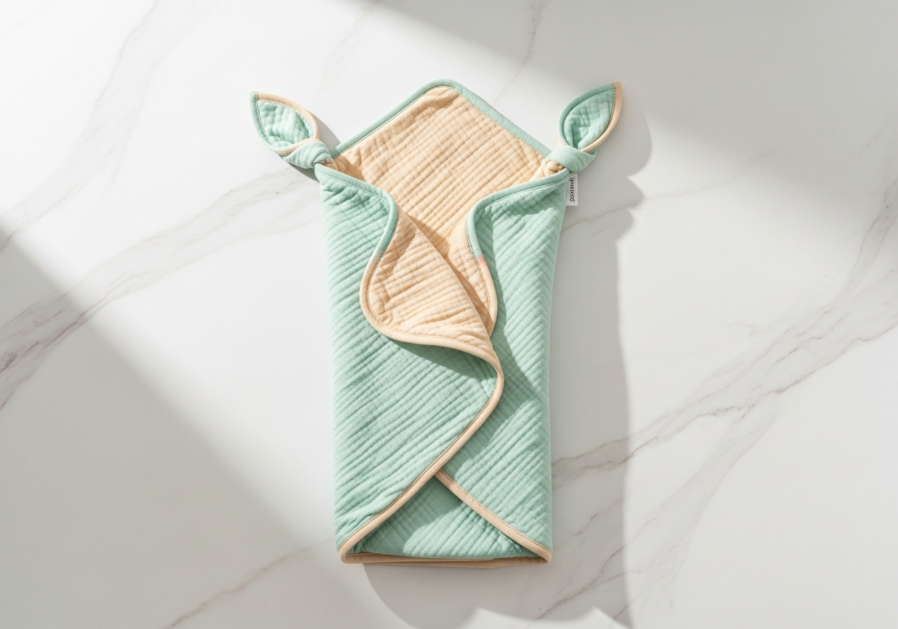
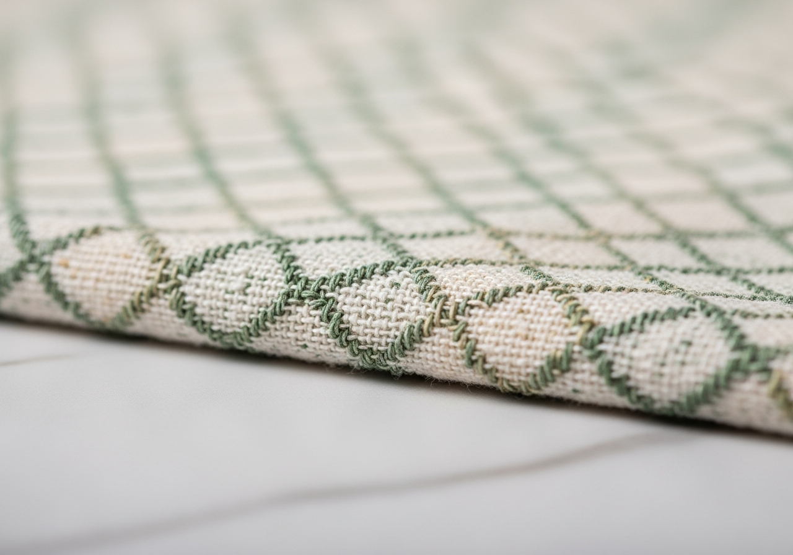

아기가 태어나고 가장 먼저 배우게 되는 것 중 하나가 바로 스와들 싸는법이에요. 병원에서는 간호사 선생님이 척척 싸주셨는데, 막상 집에 와서 직접 해보면 손이 안 따라가죠.
"팔이 자꾸 빠져나와요", "너무 세게 싼 건 아닌지 걱정돼요", "잠들었다가도 모로반사 때문에 금방 깨요." 이런 고민, 정말 많은 초보맘들이 겪는 일이에요.
오늘은 신생아 속싸개 싸는법을 5단계로 정리해드릴게요. 왜 스와들이 필요한지, 어떤 소재가 좋은지, 그리고 언제 졸업해야 하는지까지 이 글 하나로 정리해드릴게요.
스와들(속싸개)이란? 왜 필요할까?
스와들은 신생아를 부드러운 천으로 감싸 엄마 배 속과 비슷한 환경을 만들어주는 육아 방법이에요. 영어로는 Swaddle, 우리말로는 속싸개라고 부르죠.
모로반사 — 스와들이 필요한 가장 큰 이유
신생아는 모로반사(깜짝 반사)라는 원시 반사를 갖고 태어나요. 잠든 상태에서 갑자기 팔을 벌리며 놀라는 반응인데, 이 때문에 깊이 잠들었다가도 스스로 깨버리는 경우가 많아요.
스와들로 팔을 부드럽게 감싸주면 이 모로반사를 억제해서 아기가 더 길고 깊이 잠들 수 있어요. 실제로 미국소아과학회(AAP)에서도 올바른 방법의 스와들링이 신생아 수면에 도움이 된다고 밝히고 있어요.
스와들의 3가지 효과:
- 모로반사로 인한 수면 방해 감소
- 엄마 배 속과 비슷한 포근함 → 안정감
- 체온 유지에 도움 (적절한 소재 선택 시)

부드러운 대나무 소재 스와들을 펼친 모습
스와들 소재, 뭘 골라야 할까?
스와들 싸는법만큼 중요한 게 소재 선택이에요. 신생아 피부는 어른보다 5배 이상 얇고 예민하기 때문에, 직접 닿는 소재가 정말 중요해요.
소재별 특징 비교
- 대나무(밤부) 원단 — 통기성 우수, 항균 효과, 부드러운 촉감. 여름·겨울 사계절 사용 가능. 신생아에게 가장 추천되는 소재.
- 모슬린(면) — 세탁이 쉽고 가벼움. 여름용으로 적합하지만 겨울엔 얇을 수 있음.
- 저지(면 니트) — 신축성 좋아 감싸기 편함. 하지만 통기성이 대나무보다 낮음.
저희 썬데이허그 스와들은 유기농 대나무 섬유 100%를 사용해요. OEKO-TEX Standard 100 인증을 받은 원단으로, 신생아 피부에 자극 없이 사계절 사용 가능합니다.
스와들 싸는법 — 5단계 완벽 가이드
자, 이제 본격적으로 속싸개 싸는법을 알아볼게요. 처음에는 어색하지만, 3~4번만 해보면 금방 익숙해져요.

스와들 싸는법 5단계
STEP 1. 마름모 모양으로 펼치기
스와들을 바닥에 마름모(다이아몬드) 모양으로 펼쳐주세요. 위쪽 꼭짓점을 안쪽으로 15cm 정도 접어 직선 가장자리를 만들어주세요. 이 접힌 부분에 아기 목이 올 거예요.
STEP 2. 아기 올리기
접은 가장자리에 아기의 어깨선이 맞도록 눕혀주세요. 목이 접힌 천 위에 오되, 머리는 스와들 바깥으로 나와야 해요. 등은 평평하게, 무릎은 자연스럽게 구부린 자세가 좋아요.
STEP 3. 왼쪽 감싸기
아기 왼팔을 몸 옆에 가볍게 붙인 상태에서, 스와들의 왼쪽 날개를 아기 가슴 위로 감싸주세요. 남은 천은 아기 등 아래로 밀어 넣어요. 이때 팔은 구부린 상태로 감싸야 혈액순환에 좋아요.
STEP 4. 아래쪽 올리기
스와들 아래쪽 꼭짓점을 위로 올려 아기 발을 덮어주세요. 끝부분을 아기 왼쪽 어깨 뒤로 밀어 넣어요. 다리 부분은 여유롭게 해주셔야 해요 — 고관절 발달에 중요합니다.
STEP 5. 오른쪽 마무리
마지막으로 오른쪽 날개를 아기 가슴 위로 감싸고, 남은 천을 등 아래로 넣어 고정합니다. 완성!
잘 싸였는지 확인하는 방법: 아기 가슴과 스와들 사이에 손가락 2개가 들어갈 정도의 여유가 있으면 적당해요. 너무 꽉 조이면 호흡에 문제가 될 수 있고, 너무 헐거우면 풀어져서 의미가 없어요.
스와들 사용 시 꼭 지켜야 할 주의사항
스와들은 올바르게 사용하면 아기 수면에 큰 도움이 되지만, 잘못 사용하면 위험할 수도 있어요. 아래 사항은 반드시 지켜주세요.
- 반드시 등을 대고 재우세요 — 스와들 상태에서 엎드려 자는 것은 절대 안 돼요.
- 얼굴을 덮지 마세요 — 스와들이 올라와 코와 입을 가리지 않도록.
- 다리는 자유롭게 — 다리까지 꽉 조이면 고관절 이형성증 위험이 있어요.
- 실내 온도 확인 — 스와들은 보온 효과가 있으니, 실내 온도 20~22도에서 사용해주세요.
- 과열 주의 — 땀을 흘리거나 가슴이 뜨겁다면 너무 덥다는 신호예요.
스와들 졸업 시기 — 언제 그만 싸야 할까?
스와들 졸업 시기는 보통 생후 3~4개월 전후예요. 정확한 기준은 다음과 같아요:
- 뒤집기 시도가 보일 때 — 가장 중요한 신호! 뒤집기 시작하면 반드시 스와들을 졸업해야 해요.
- 스와들을 계속 풀어헤칠 때 — 팔을 빼려고 계속 시도한다면 준비 된 거예요.
- 모로반사가 줄어들 때 — 보통 3~4개월이면 자연스럽게 사라져요.
스와들을 졸업하면 슬리핑백으로 전환하는 것을 추천드려요. 팔은 자유롭게 움직이면서도 체온은 유지해주는 제품이에요. 썬데이허그 슬리핑백은 스와들에서 자연스럽게 전환할 수 있도록 디자인되어 있답니다.
포근하고 안전한 수면 환경
자주 묻는 질문 (FAQ)
Q. 스와들은 낮잠에도 싸야 하나요?
네, 낮잠에도 스와들을 사용하면 좋아요. 다만 반드시 보호자가 주변에 있을 때만 사용하고, 스와들 상태로 방치하지 마세요.
Q. 스와들을 싫어하는 아기는 어떻게 하나요?
처음에 거부하는 아기들도 있어요. 팔을 완전히 감싸지 않고 한쪽 팔만 밖으로 빼주는 '하프 스와들'부터 시도해보세요. 또는 스트랩형 스와들 제품을 사용하면 싸는 과정 없이 간편하게 착용할 수 있어요.
Q. 여름에도 스와들을 해야 하나요?
여름에는 얇고 통기성 좋은 소재를 선택하면 돼요. 대나무 소재 스와들은 여름에도 시원하게 사용할 수 있어요. 단, 실내 온도가 26도 이상이면 기저귀만 입힌 상태로 얇은 스와들을 감싸주세요.
마무리
오늘 스와들 싸는법에 대해 정리해봤어요. 핵심만 다시 짚어드리면:
- 마름모로 펼치고 윗부분 접기
- 아기 어깨선에 맞춰 눕히기
- 왼쪽 → 아래 → 오른쪽 순서로 감싸기
- 가슴에 손가락 2개 여유 확인
- 뒤집기 시작하면 졸업 → 슬리핑백 전환
처음엔 누구나 어색해요. 하루에 여러 번 싸고 풀고를 반복하다 보면 금방 달인이 됩니다. 아기도 점점 스와들에 익숙해지면서 더 편안하게 잠들 거예요.
궁금한 점은 댓글로 남겨주세요. 더 많은 신생아 수면 정보는 신생아 수면 가이드: 처음 100일에서 확인하실 수 있어요.